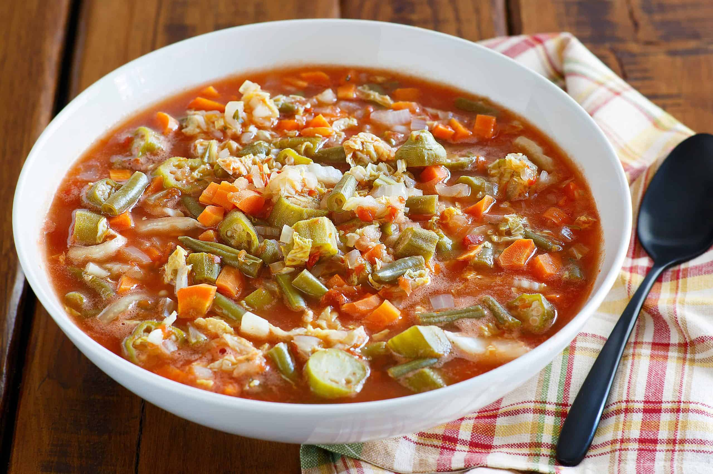

Home
Soup

Chunky Vegetarian Vegetable Soup
I make this super-easy vegetarian vegetable soup about every other week. It's thick and hearty, almost like a stew. Served with warm whole grain bread it makes a filling meal. Use green peas or green peas in place of okra if preferred.
Ingredients
2 tablespoons olive oil
- ½ onion, chopped
- 3 stalks celery, chopped
- 2 cloves garlic, minced
- 4 cups vegetable broth
- 1 (15 ounce) can tomato sauce
- 4 carrots, peeled and cut into 1/4-inch rounds
- 2 baking potatoes, cut into bite-size pieces
- 1 cup frozen corn
- 1 cup frozen shelled edamame (green soybeans)
- 1 cup frozen sliced okra
- 2 leaves kale, roughly chopped
- salt to taste
- 1 teaspoon ground black pepper
Home